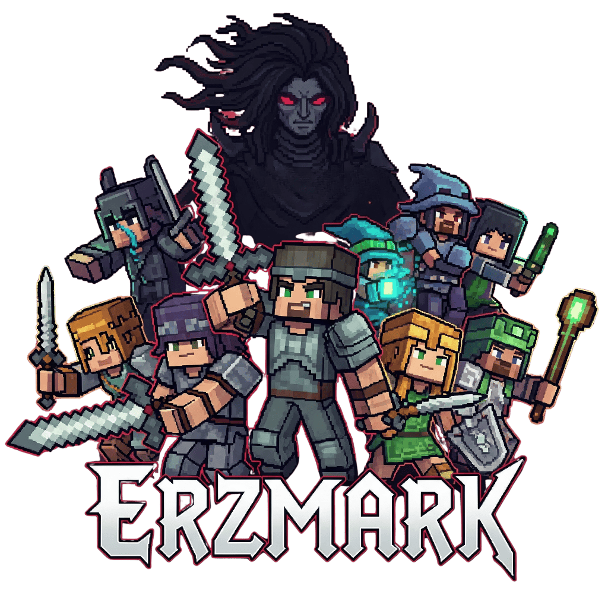

Der offizielle Desktop-Launcher für Erzmark – meldet dich mit deinem Microsoft-Account an, hält den Client automatisch aktuell und verbindet dich direkt mit dem Server. Kein Bastelaufwand, kein Modpack-Chaos.
Kein Versions- oder Modauswahl-Chaos – Installieren, Updaten und Play sind ein einziger Button.
Der Client bleibt immer exakt auf dem Stand, den der Server erwartet – und der Launcher selbst aktualisiert sich ebenfalls automatisch.
Anmeldung über den offiziellen Microsoft-OAuth-Flow – dein Account-Passwort sieht der Launcher nie.
Nach dem Start landest du automatisch auf erzmark.de – kein Suchen im Multiplayer-Menü.